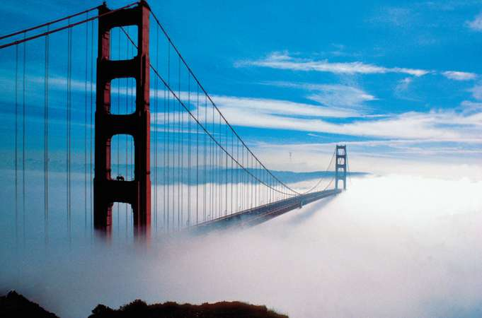

San Francisco is home to a little bit of everything. Whether you're a first time visitor, or a long-time local, San Francisco's Golden Gates welcome all. This is the place to find out about all things San Francisco.
WRITTEN BY : ANDELA
A crimson bridge, cable cars, a sparkling bay, and streets lined with elegant Victorian homes—San Francisco is undeniably one of the world’s great cities. Located along the Northern California at the state’s distinctive bend in the coast, the region has an alluring magic that stretches beyond the bay to diverse cities with nightlife and trend-setting cuisine.
"San Francisco is the only city I can think of that can survive all the things you people are doing to it and still look beautiful." – Frank Lloyd Wright
The Bay Area is also home to some of the world’s finest wine country, including Napa Valley and Sonoma, plus waterfront towns, dramatic beaches, and the tech-savvy southern end of the bay known as the Silicon Valley, where lunchtime ideas at Google, Facebook, and Apple, turn into the next brilliant innovation.
Sonoma
On this website, I will do my best to show you the breathtaking beauty of my favorite city through the TRIP IDEAS section. In the HISTORY section, we will tell you all about the history, and let you take a look at the maps, amazing paintings and historical photographs that show the journey of San Francisco.
I will also do my research on where to stay during your trip to San Francisco and present to you, my top 10 hotel choices, whether you're looking for the best romantic areas, areas to stay in with your family, or perhaps the best areas to stay in California Wine Country. We will make sure to provide you with many consideration-worth options inside our HOTELS section, and all that's left for you to do is choose the one that works best for you!
Make sure you check our FOOD section, for a list of some of the dishes you must try, but also info about where to find them.
Down below, you can read some info about the city, its climate, people of San Francisco, getting around the city etc. Enjoy your trip to San Francisco!
San Francisco holds a secure place in the United States’ romantic dream of itself—a cool, elegant, handsome, worldly seaport whose steep streets offer breathtaking views of one of the world’s greatest bays. According to the dream, San Franciscans are sophisticates whose lives hold full measures of such civilized pleasures as music, art, and good food. Their children are to be pitied, for, as the wife of publishing magnate Nelson Doubleday once said, “They will probably grow up thinking all cities are so wonderful.” To San Franciscans their city is a magical place, almost an island, saved by its location and history from the sprawl and monotony that afflicts so much of urban California.
Climate
Winter in San Francisco is rainy and mild, spring sunny and temperate, summer foggy and cool, and autumn sunny and warm. The average minimum temperature is 51 °F (11 °C), and the average maximum is 63 °F (17 °C). The mean rainfall, almost all of which occurs between November and April, is about 21 inches (533 mm). There is sunshine during two-thirds of the possible daylight hours. The most characteristic feature of the weather, however, is the summer fog, which lies low over the city until midday, creating consternation among shivering tourists. This fog is a phenomenon of temperature contrasts, created when warm, moist ocean air comes in contact with cold water welling up from the ocean bottom along the coast.

Fog enveloping the Golden Gate Bridge
People of San Francisco
San Francisco has a population of 864,816 and because of its small size – it’s the second-most densely populated major city in America (after New York). The people come from various ethnic backgrounds. Majority of the residents are Whites (48%), followed by Asians (33%), Hispanic or Latino (15%), African Americans (6%) and others. The people work in various sectors like finance, tourism, information technology, education, healthcare, etc. The residents call themselves ‘San Franciscans’ – they are helpful and friendly.
Getting Around in San Francisco
The San Francisco public transportation system includes:
City buses (called Muni)
Streetcars/Trolleys (called Muni Metro)
BART trains (Bay Area Rapid Transit)
Cable cars
San Francisco Bay Ferries
Golden Gate Ferries
Golden Gate Transit (SF & North Bay buses)
PresidiGo (free shuttle)
You can buy individual tickets or get transit passes for unlimited travel over different time periods.